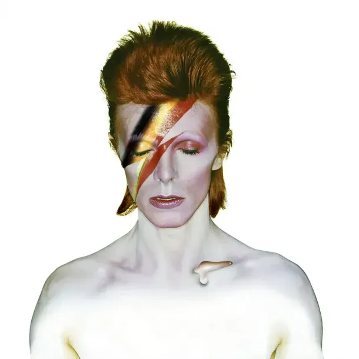
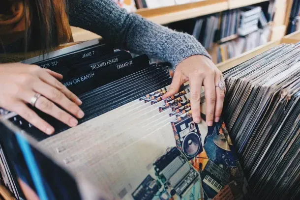

La música es el latido de la capital Alemana — desde el hipnótico pulso de los beats tecno, las variedades de jazz que reverberan por clubs llenos de humo, orquestas renombradas tocando en salones de concierto de la alta cultura y los músicos callejeros que levantan el ánimo de la ciudad con sus canciones. Si la música es tu mantra, aquí hay una probada de la interminable variedad de música que hay para samplear en Berlín.
Berlin Music Tours ofrece una oportunidad a buen precio para rascar debajo de la superficie del famoso período de Trilogía de David Bowie y de la música que hizo cuando llamó a Berlín su hogar.
Mauer Park, Warschauer, East Side Gallery, Oberbaumbrucke, Hackescher Markt — estos son solo algunos de los puntos donde podrás encontrar a los artistas callejeros de Berlin derramando todo su talento musical.
Atención a todos los amantes del vinil: Berlín es una ciudad donde el disco sigue girando y que ciertamente sabe como hacer tiendas de discos — desde tiendas famosas como Hard Wax y Oye Records — especializándose en todo desde el Jazz al Tecno — hasta Space Hall, descubre como la cera prensada prospera en Berlín.
Por Mauricio D. Rascón
mauriciodaiki@outlook.com